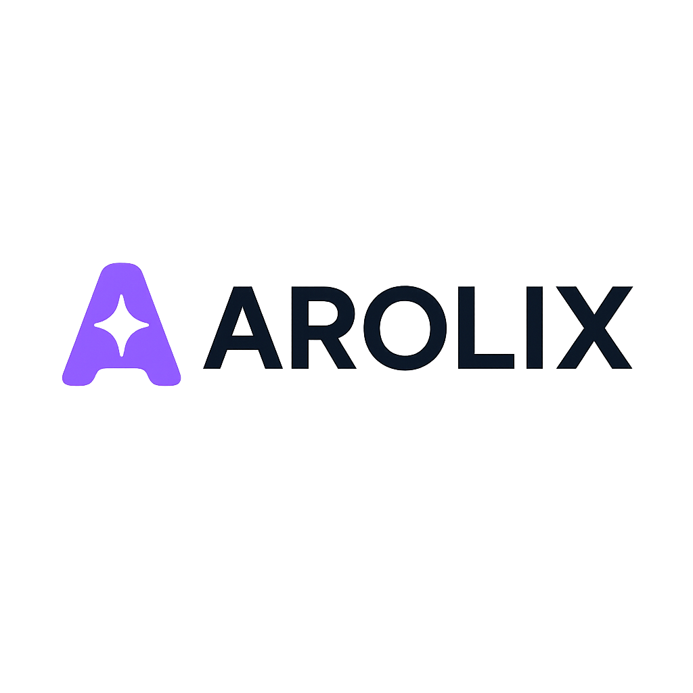

Saiba o que precisa
da sua atenção.
Receitas e despesas em uma agenda de lançamentos. Separe o que já foi pago e recebido do que ainda está pendente.
Receitas · Despesas · Recorrências

CLAREZA PARA DECIDIR
O que entrou, o que vai sair e o que ainda vem pela frente. Organize sua vida financeira sem se perder entre contas, compras e faturas.
Depois, Pro por R$ 9,90 a cada 30 dias.
Use no computador e instale na tela inicial do celular.
Seu mês, em perspectiva
Prévia ilustrativa com valores fictícios. Nenhuma conta bancária está conectada.
ORGANIZAÇÃO QUE FAZ SENTIDO
Um espaço para acompanhar sua rotina e tomar decisões com os números à vista.
Receitas e despesas em uma agenda de lançamentos. Separe o que já foi pago e recebido do que ainda está pendente.
Acompanhe compras, parcelas e faturas em um lugar próprio. Veja seus compromissos antes de a fatura fechar.
Consulte o balanço do período e as despesas por categoria, incluindo as compras do cartão. Olhe o realizado e o que ainda está previsto.
CADA COISA NO SEU LUGAR
Da compra parcelada ao planejamento do mês, sem precisar montar o quebra-cabeça em várias planilhas.
Encontre seus lançamentos, acompanhe pendências e registre pagamentos com seus comprovantes.
Pendências, em uma leitura simples.
Conteúdo demonstrativo · valores fictícios
DO SEU JEITO
Use a mesma conta nos dois. No iPhone, adicione o Arolix à tela inicial pelo Safari e abra pelo ícone, em uma janela própria.
O Arolix precisa de internet. A instalação é pelo navegador, não pela App Store.
DO PRIMEIRO REGISTRO À VISÃO DO MÊS
Não precisa organizar a vida inteira de uma vez. Comece com suas contas e os próximos compromissos.
Na tela de entrada, escolha “Criar Conta”. Confirme seu e-mail e conheça o app por 5 dias.
Cadastre as contas e os cartões que você usa. Separe o dinheiro disponível dos seus compromissos.
Registre receitas e despesas, acompanhe as faturas e consulte o balanço por categoria.
Seus registros. Seu ritmo. O Arolix não conecta automaticamente ao banco nem pede sua senha bancária. Você informa os dados que quer acompanhar.
Começar agoraSIMPLES TAMBÉM NO PREÇO
Experimente o Arolix por 5 dias. Depois, continue com o Pro para manter sua organização financeira em dia.
Investimentos e consulta CVM não fazem parte do plano Pro. Esses recursos permanecem em acesso privado.
por 30 dias de acesso
O pagamento do Pro é realizado pelo Asaas.
ANTES DE COMEÇAR
Acesse a tela de entrada, clique em “Criar Conta” e conclua seu cadastro. O teste permite conhecer as funcionalidades financeiras por 5 dias. Depois desse período, o plano Pro é necessário para continuar usando essas funcionalidades.
Não. Você cadastra suas contas e registra receitas, despesas e compras no Arolix. Não é necessário fornecer senha do banco. Os valores desta página são apenas exemplos.
Sim. Abra o Arolix no Safari, toque em Compartilhar e depois em Adicionar à Tela de Início. Se a opção aparecer, mantenha “Abrir como App da Web” ativado. Entre com a mesma conta que usa no computador. É necessário estar conectado à internet.
Não. O Pro inclui a organização financeira, cartões e relatórios apresentados aqui. Investimentos e consulta CVM permanecem em acesso privado e não fazem parte desta oferta.
A assinatura do Pro é iniciada na página de planos do Arolix e o pagamento é feito no ambiente do Asaas. O acesso depende da confirmação do pagamento, não apenas do envio de um comprovante.
SEU DINHEIRO, EM PERSPECTIVA